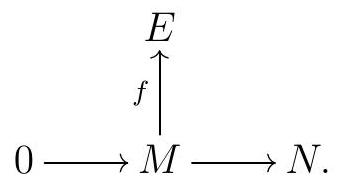
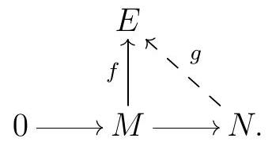

On the one hand, if \(E\) is injective then our condition is simply a special case of the definition of injective module. On the other hand, suppose that this condition holds, and consider any diagram

To simplify notation, let’s assume our map \(M \longrightarrow N\) is indeed the inclusion of the submodule \(M\text{,}\) so we can write \(m \in N\) for the image of \(m\) in \(N\text{.}\) Consider the set
\begin{equation*}
X:=\{(A, g) \mid A \text { is a submodule of } N, M \subseteq A \subseteq N \text {, and } g \text { extends } f\}
\end{equation*}
First, notice \(X\) is nonempty, since \((M, f) \in X\text{.}\) Moreover, we can partially order \(X\) by setting \((A, g) \leqslant(B, h)\) if \(A \subseteq B\) and \(\left.h\right|_{A}=g\text{.}\) So we have a nonempty partially ordered set; let’s show we can apply Zorn’s Lemma to it.
Given a chain in \(X\text{,}\) meaning a sequence
\begin{equation*}
\left(A_{1}, g_{1}\right) \leqslant\left(A_{2}, g_{2}\right) \leqslant \cdots
\end{equation*}
of nested submodules \(A_{1} \subseteq A_{2} \subseteq \cdots\) and maps \(g_{i}\) that extend all \(g_{j}\) with \(j \leqslant i\text{,}\) let \(A:=\bigcup_{i} A_{i}\text{,}\) and define
\begin{equation*}
\begin{aligned}
& A \longrightarrow g \\
& a \longrightarrow g_{i}(a) \text { if } a \in A_{i} .
\end{aligned}
\end{equation*}
Since all the \(g_{i}\) are homomorphisms of \(R\)-modules, this map \(g\) is indeed a map of \(R\)-modules. Moreover, \(g\) is well-defined, since the \(g_{i}(a)=g_{j}(a)\) whenever \(a \in A_{i} \cap A_{j}\text{.}\) By construction, this map extends all the \(g_{i}\text{,}\) so we conclude that \((A, g)\) is an upper bound for our chain. Moreover, \(M \subseteq A \subseteq N\) follows immediately from our construction, and since each \(g_{i}\) extends \(f\text{,}\) so does \(g\text{.}\) We conclude that \((A, g) \in X\text{,}\) and more generally that any chain in \(X\) has an upper bound in \(X\text{.}\) So Zorn’s Lemma applies.
By Zorn’s Lemma, \(X\) has a maximal element, say \((A, g)\text{.}\) We claim that \(A=N\text{.}\) Suppose not, and let \(n \in N\) be an element not in \(A\text{.}\) One can check that
\begin{equation*}
I:=\{r \in R \mid r n \in A\}
\end{equation*}
is an ideal in \(R\text{,}\) and that
\begin{equation*}
\begin{aligned}
& I \stackrel{h}{\longrightarrow} E \\
& r \longrightarrow g(r n)
\end{aligned}
\end{equation*}
is an \(R\)-module homomorphism.
By assumption, we can extend \(h\) to an \(R\)-module homomorphism \(R \longrightarrow E\text{,}\) which we will write as \(h\) as well. Now the \(R\)-module homomorphism
\begin{equation*}
\begin{aligned}
& A+R n \longrightarrow E \\
& a+r n \longrightarrow g(a)+h(r)
\end{aligned}
\end{equation*}
is well-defined by construction, since any \(r n \in A\) satisfies \(g(r n)=h(r)\text{,}\) and if \(r n=r^{\prime} n\) then \(h(r)=r n=r^{\prime} n=h\left(r^{\prime}\right)\text{.}\) Finally, this map agrees with \(g\) on \(A\text{,}\) and thus it agrees with \(f\) on \(M\text{,}\) so \((A+R n, \varphi) \in X\) and \((A, g) \leqslant(A+R n, \varphi)\text{.}\) By the maximality of \((A, g)\text{,}\) we conclude that \(A+R n=A\text{,}\) and thus \(n \in A\text{,}\) which is a contradiction. We conclude that \(A=N\text{.}\) Therefore, \(g\) makes the diagram

commute.